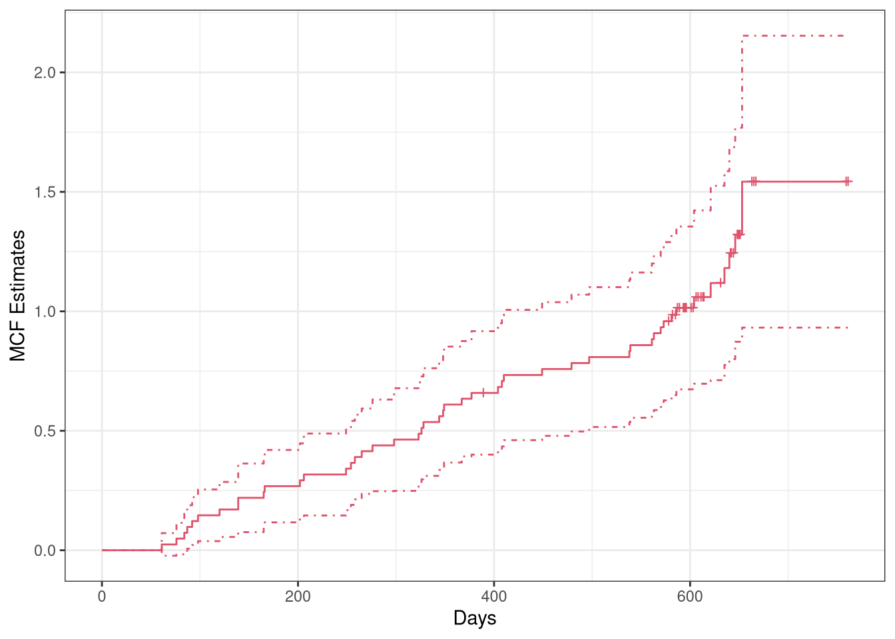
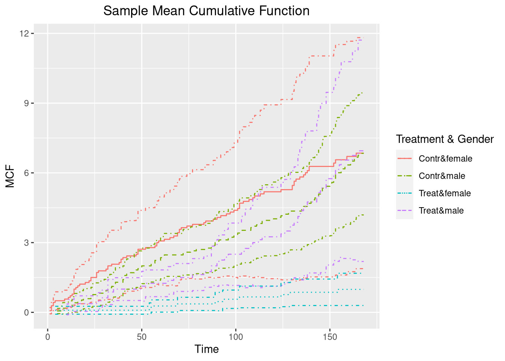
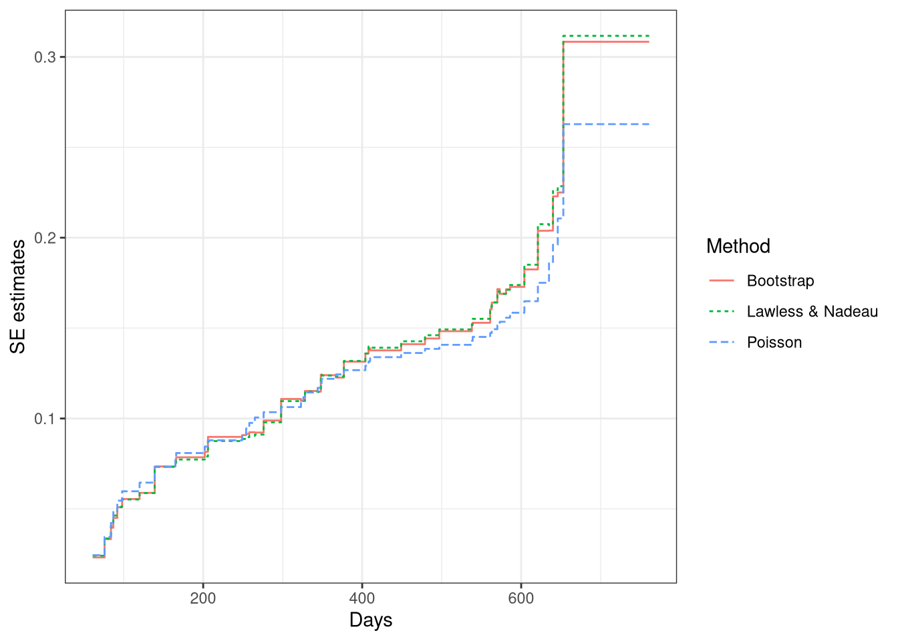
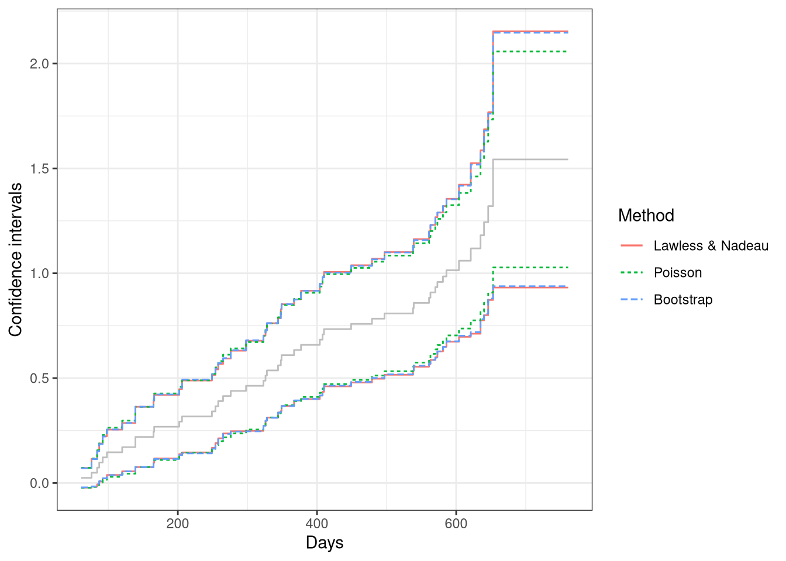
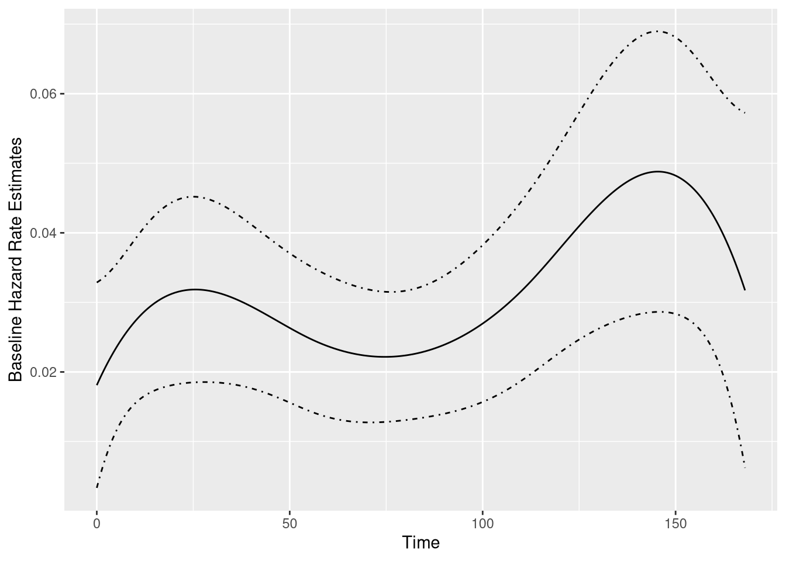
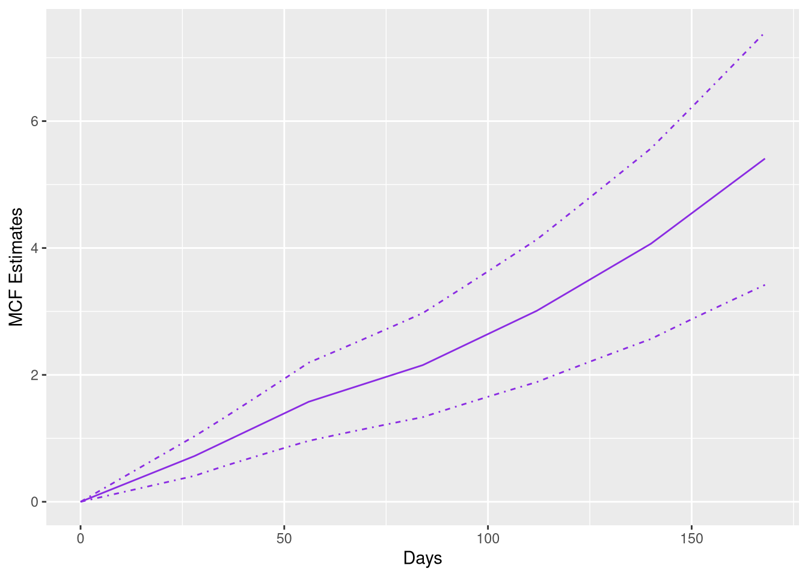
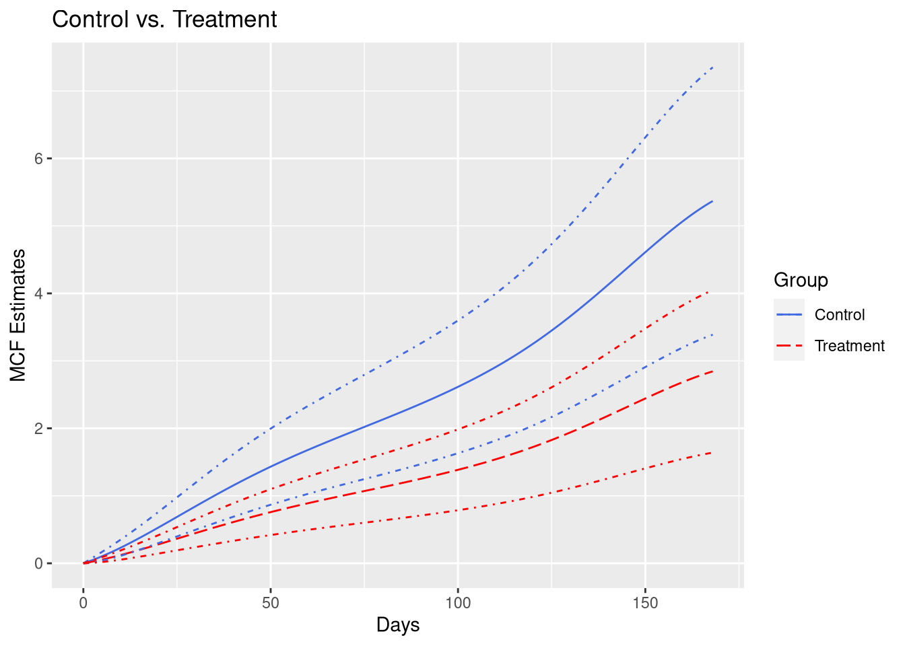
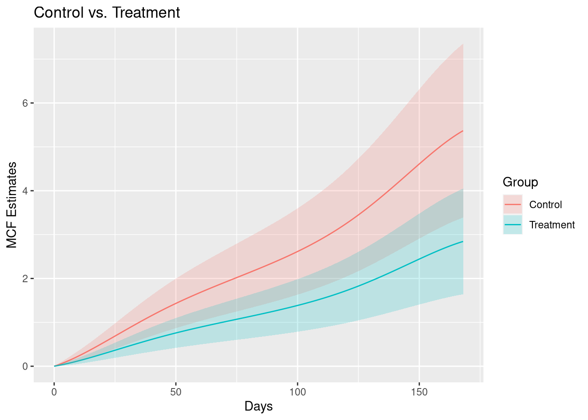

Introduction to reda through Examples
Wenjie Wang
2020-06-27
Source:vignettes/reda-intro.Rmd
reda-intro.RmdIn this vignette, we introduce how to explore recurrent event data by mean cumulative function, and modeling the event counts of interest by gamma frailty model with the reda package through examples. Most functions in the package are S4 methods that produce S4 class objects. The details of function syntax and the produced objects are available in the package manual, which will thus not be covered in this vignette.
Introduction
Simulated recurrent event data
library(reda) packageVersion("reda")
## [1] '0.5.1'First of all, the sample recurrent event data we are going to use in the following examples is called simuDat, which contains totally 500 observations of 6 variables.
head(simuDat)
## ID time event group x1 gender
## 1 1 1 1 Contr -1.93 female
## 2 1 22 1 Contr -1.93 female
## 3 1 23 1 Contr -1.93 female
## 4 1 57 1 Contr -1.93 female
## 5 1 112 0 Contr -1.93 female
## 6 2 140 0 Treat -0.11 femalestr(simuDat)
## 'data.frame': 500 obs. of 6 variables:
## $ ID : num 1 1 1 1 1 2 3 3 4 4 ...
## $ time : num 1 22 23 57 112 140 40 168 14 112 ...
## $ event : int 1 1 1 1 0 0 1 0 1 0 ...
## $ group : Factor w/ 2 levels "Contr","Treat": 1 1 1 1 1 2 1 1 1 1 ...
## $ x1 : num -1.93 -1.93 -1.93 -1.93 -1.93 -0.11 0.2 0.2 -0.43 -0.43 ...
## $ gender: Factor w/ 2 levels "female","male": 1 1 1 1 1 1 1 1 1 1 ...where
-
ID: Subjects identification (ID). -
time: Event or censoring time. -
event: Event indicator, 1 = event; 0 = censored. -
group: Treatment group indicator. -
x1: Continuous variable. -
gender: Gender of subjects.
The dataset was simulated by thinning method (Lewis and Shedler 1979) and further processed for a better demonstration purpose. (Note that reda also provides functions for simulating survival data, and recurrent event data. See vignette("reda-simulate") for details.)
Data checking
The process’s ID, event times, event indicators or costs, time origins, and possible terminal events of the follow-up is specified in the function Recur(), which serves as the formula response and contains considerate data checking procedures for recurrent event data. See vignette("reda-Recur") for details.
Exploratory analysis
Nonparametric Mean Cumulative Function Estimates
The nonparametric mean cumulative function (MCF) estimates are widely utilized in exploring the trend of recurrent event data. MCF is also called cumulative mean function (CMF) in literature (see e.g., Lawless and Nadeau 1995). Let \(N_i(t)\) denote the number of events that occurred up to time \(t\) of process \(i\). The MCF of \(N_i(t)\) denoted by \(M_i(t)\), is defined as follows: \[M_i(t)=\mathbb{E}\{N_i(t)\}.\] For \(k\) independent processes having the same MCF, the Nelson-Aalen Estimator (Nelson 2003) is often used, which is defined as follows: \[ \hat{M}(t) = \int_0^t \frac{dN(s)}{\delta(s)}, \] where \(dN(s)=\sum_{i=1}^k dN_i(s)\), \(dN_i(s)\) is the jump size of process \(i\) at time \(s\), \(\delta(s) = \sum_{i=1}^k \delta_i(s)\), \(\delta_i(s)\) is the at-risk indicator of process \(i\) at time \(s\). One variant is called the cumulative sample mean (CSM) function introduced by Cook and Lawless (2007), which assumes that \(\delta_i(s) = 1\) for \(s \ge 0\).
The nonparametric estimate of MCF at each time point does not assume any particular underlying model. The variance estimates at each time point can be computed by the Lawless and Nadeau method (Lawless and Nadeau 1995), Poisson process method, the bootstrap method (Efron 1979) with subjects as resampling units. For CSM, the cumulative sample variance (CSV) method can be used instead. The approximate confidence intervals are provided as well, which are constructed based on the asymptotic normality of the MCF estimates itself or logarithm of the MCF estimates.
The function mcf() is a generic function for the MCF estimates from a sample data or a fitted gamma frailty model (as demonstrated later). If a formula with Recur() as formula response is specified in function mcf(), the formula method for estimating the sample MCF will be called. The covariate specified at the right hand side of the formula should be either 1 or any “linear” combination of factor variables in the data. The former computes the overall sample MCF. The latter computes the sample MCF for each level of the combination of the factor variable(s) specified, respectively.
The valve-seat dataset in Nelson (1995) and the simulated sample data are used for demonstration as follows:
## Example 1. valve-seat data valveMcf0 <- mcf(Recur(Days, ID, No.) ~ 1, data = valveSeats) ## Example 2. the simulated data simuMcf <- mcf(Recur(time, ID, event) ~ group + gender, data = simuDat, subset = ID %in% seq_len(50))
After estimation, we may plot the sample MCF by function plot(), which returns a ggplot object so that the plot produced can be easily further customized by ggplot2. The legendname and legendLevels can be specified to easily customize the legend in the plot. Two examples are given as follows:
## overall sample MCF for valve-seat data in Nelson (1995) plot(valveMcf0, conf.int = TRUE, mark.time = TRUE, addOrigin = TRUE, col = 2) + ggplot2::xlab("Days") + ggplot2::theme_bw()

## sample MCF for different groups (the default theme) plot(simuMcf, conf.int = TRUE, lty = 1:4, legendName = "Treatment & Gender")

Note that in the first plot, the censoring times was marked on the step curve by specifying mark.time = TRUE and the time origins was included in the curve by specifying addOrigin = TRUE. In addition, the type and color of the line can be specified through lty and col, respectively.
As for the variance estimates, the Poisson process method assumes that the underlying counting process is a Poisson process and may underestimate the variance if the assumption cannot be justified. While, the Lawless and Nadeau method is more robust to departures from the Poisson process assumption. The nonparametric bootstrap method can be considered as well if an extra computational burden is not of concern. We may perform a quick comparison among the standard error estimates and the confidence intervals from these methods for the valve seats data as follows:
## Poisson process method valveMcf1 <- mcf(Recur(Days, ID, No.) ~ 1, valveSeats, variance = "Poisson") ## bootstrap method (with 1,000 bootstrap samples) set.seed(123) valveMcf2 <- mcf(Recur(Days, ID, No.) ~ 1, valveSeats, variance = "bootstrap", control = list(B = 1e3)) ## comparing the standard error estimates library(ggplot2) ciDat <- rbind(cbind(valveMcf0@MCF, Method = "Lawless & Nadeau"), cbind(valveMcf1@MCF, Method = "Poisson"), cbind(valveMcf2@MCF, Method = "Bootstrap")) ggplot(ciDat, aes(x = time, y = se)) + geom_step(aes(color = Method, linetype = Method)) + xlab("Days") + ylab("SE estimates") + theme_bw()

## comparing the confidence intervals ggplot(ciDat, aes(x = time)) + geom_step(aes(y = MCF), color = "grey") + geom_step(aes(y = lower, color = Method, linetype = Method)) + geom_step(aes(y = upper, color = Method, linetype = Method)) + xlab("Days") + ylab("Confidence intervals") + theme_bw()

From the comparison, we may find that the SE estimates and the confidence intervals from the Lawless and Nadaeu method and the bootstrap method have a good agreement, while the Poisson process method gives slightly smaller SE estimates and a narrower confidence band. In practice, the Lawless and Nadeau method is suggested if it is hard to justify the Poisson process assumption.
Comparing two-sample MCFs
The function mcfDiff.test() is an implementation of the pseudo-score tests for comparing two-sample MCFs proposed by Cook, Lawless, and Nadeau (1996), while the function mcfDiff() gives the difference estimates and wraps the pseudo-score testing results from mcfDiff.test() (by default).
Suppose we are interested in comparing the two-sample MCFs between the treatment and control group in the simulated data. We may simply feed the mcf.formula object returned from the function mcf() to function mcfDiff() as follows:
## one sample MCF object of two groups mcf0 <- mcf(Recur(time, ID, event) ~ group, data = simuDat) (mcf_diff0 <- mcfDiff(mcf0))
## Call:
## mcfDiff(mcf1 = mcf0)
##
## Two-Sample Pseudo-Score Tests:
## Statistic Variance Chisq DF Pr(>Chisq)
## Constant Weight 52.5855 670.1014 4.1266 1 0.042214 *
## Linear Weight 35.7687 158.9869 8.0472 1 0.004557 **
## ---
## Signif. codes: 0 '***' 0.001 '**' 0.01 '*' 0.05 '.' 0.1 ' ' 1
##
## Variance Estimator: robustThen what if the covariate group contains more than two levels? In that case, we may compute the sample MCF for each group, respectively, and feed both of the generated mcf.formula objects to mcfDiff as the first two arguments. Alternatively, an intuitive - method is available for comparing the difference between two mcf.formual objects, mcf1 and mcf2, returned from the mcf formula method, which means that the function call mcf1 - mcf2 is equivalent to mcfDiff(mcf1, mcf2). A simple example is given below.
## explicitly ask for the difference of two sample MCF mcf1 <- mcf(Recur(time, ID, event) ~ 1, simuDat, group %in% "Contr") mcf2 <- mcf(Recur(time, ID, event) ~ 1, simuDat, group %in% "Treat") mcf1 - mcf2
## Call:
## mcfDiff(mcf1 = mcf1, mcf2 = mcf2)
##
## Two-Sample Pseudo-Score Tests:
## Statistic Variance Chisq DF Pr(>Chisq)
## Constant Weight 52.5855 670.1014 4.1266 1 0.042214 *
## Linear Weight 35.7687 158.9869 8.0472 1 0.004557 **
## ---
## Signif. codes: 0 '***' 0.001 '**' 0.01 '*' 0.05 '.' 0.1 ' ' 1
##
## Variance Estimator: robustSimilarly, a plot() method based on ggplot2 is available for visual comparison.
plot(mcf_diff0)

Gamma frailty model
Model with constant rate function
The default model when argument df, knots, and degree are not specified is gamma frailty model with (one piece) constant rate function, which is equivalent to negative binomial regression with the same shape and rate parameter in the gamma prior.
## Call:
## rateReg(formula = Recur(time, ID, event) ~ group + x1, data = simuDat)
##
## Coefficients of covariates:
## groupTreat x1
## -0.6072889 0.3257505
##
## Frailty parameter: 0.5874622
##
## Boundary knots:
## 0, 168
##
## Coefficients of pieces:
## B-spline1
## 0.03041865The function rateReg() returns rateReg object, which can be printed out by calling the object. (Internally, show() method for rateReg object is called.)
Model with piecewise constant rate function
When argument df or knots (at least one internal knot) is specified, the model becomes gamma frailty model with piecewise constant rate function or so-called HEART model (Fu, Luo, and Qu 2016) if argument degree is specified to be zero as default.
We may specify df and leave knots and degree as default. Then piecewise constant rate function will be applied and the number of pieces will equal df. The internal knots will be automatically specified at suitable quantiles of the covariate representing event and censoring time.
For example, two pieces’ constant rate function can be simply specified by setting df = 2. The internal knot will be the median time of all the event and censoring time. Also, we can fit the models on the first 50 subjects by specifying argument subset.
# two pieces' constant rate function (twoPiecesFit <- rateReg(Recur(time, ID, event) ~ group + x1, df = 2, data = simuDat, subset = ID %in% 1:50))
## Call:
## rateReg(formula = Recur(time, ID, event) ~ group + x1, data = simuDat,
## subset = ID %in% 1:50, df = 2)
##
## Coefficients of covariates:
## groupTreat x1
## -0.7883880 0.3387935
##
## Frailty parameter: 0.6918456
##
## Internal knots:
## 102
##
## Boundary knots:
## 0, 168
##
## Coefficients of pieces:
## B-spline1 B-spline2
## 0.03396500 0.04889013In the example shown above, the internal knots is set automatically to be 102 and the baseline rate function is two pieces’ constant.
If internal knots are specified explicitly, the df will be neglected even if it is specified. An example of model with six pieces’ constant rate function is given as follows:
(piecesFit <- rateReg(Recur(time, ID, event) ~ group + x1, data = simuDat, knots = seq(from = 28, to = 140, by = 28)))
## Call:
## rateReg(formula = Recur(time, ID, event) ~ group + x1, data = simuDat,
## knots = seq(from = 28, to = 140, by = 28))
##
## Coefficients of covariates:
## groupTreat x1
## -0.6382015 0.3062607
##
## Frailty parameter: 0.5865717
##
## Internal knots:
## 28, 56, 84, 112, 140
##
## Boundary knots:
## 0, 168
##
## Coefficients of pieces:
## B-spline1 B-spline2 B-spline3 B-spline4 B-spline5 B-spline6
## 0.02578590 0.03051400 0.02063051 0.03059808 0.03774148 0.04792728Model with spline rate function
When argument degree is specified to be a positive integer, the baseline rate function is fitted by splines. The type or flavor of the splines can be specified by argument spline. The available option for spline are bSplines for B-splines and mSplines for M-splines. (See R package spline2 for details about the spline functions used internally.) A partial matching on names is allowed.
For example, one may want to fit the baseline rate function by a cubic spline with two internal knots. Then we may explicitly specify degree = 3 and knots to be a length-two numeric vector. Or we may simply specify degree = 3 and df = 6 Then the internal knots will be automatically specified at suitable quantiles of the covariate representing event and censoring time. Generally speaking, the degree of freedom of spline (or the number of spline bases) equals the summation of the number of internal knots and the degree of each spline base, plus one if intercept is included in spline bases.
## internal knots are set as 33% and 67% quantiles of time variable (splineFit <- rateReg(Recur(time, ID, event) ~ group + x1, data = simuDat, df = 6, degree = 3, spline = "mSplines"))
## Call:
## rateReg(formula = Recur(time, ID, event) ~ group + x1, data = simuDat,
## df = 6, degree = 3, spline = "mSplines")
##
## Coefficients of covariates:
## groupTreat x1
## -0.6360235 0.3057244
##
## Frailty parameter: 0.5882684
##
## Internal knots:
## 73.33333, 138
##
## Boundary knots:
## 0, 168
##
## Coefficients of spline bases:
## M-spline1 M-spline2 M-spline3 M-spline4 M-spline5 M-spline6
## 0.3431193 1.5542060 0.1478426 1.7829521 1.3690238 0.1828846## or internal knots are expicitly specified (splineFit <- rateReg(Recur(time, ID, event) ~ group + x1, data = simuDat, spline = "bSp", degree = 3L, knots = c(56, 112)))
## Call:
## rateReg(formula = Recur(time, ID, event) ~ group + x1, data = simuDat,
## knots = c(56, 112), degree = 3L, spline = "bSp")
##
## Coefficients of covariates:
## groupTreat x1
## -0.6352812 0.3061369
##
## Frailty parameter: 0.5885324
##
## Internal knots:
## 56, 112
##
## Boundary knots:
## 0, 168
##
## Coefficients of spline bases:
## B-spline1 B-spline2 B-spline3 B-spline4 B-spline5 B-spline6
## 0.01809635 0.04107572 0.01770835 0.02399031 0.06318482 0.03172925Summary of model fits
A brief summary of the fitted model is given by show() method as shown in the previous examples. Further, summary() method for rateReg object provides a more specific summary of the model fitted. For instance, the summary of the models fitted in section of model fitting can be called as follows:
summary(constFit)
## Call:
## rateReg(formula = Recur(time, ID, event) ~ group + x1, data = simuDat)
##
## Coefficients of covariates:
## coef exp(coef) se(coef) z Pr(>|z|)
## groupTreat -0.60729 0.54483 0.28518 -2.1295 0.03321 *
## x1 0.32575 1.38507 0.16640 1.9576 0.05028 .
## ---
## Signif. codes: 0 '***' 0.001 '**' 0.01 '*' 0.05 '.' 0.1 ' ' 1
##
## Parameter of frailty:
## parameter se
## Frailty 0.5874622 0.1101527
##
## Boundary knots:
## 0, 168
##
## Degree of spline bases: 0
##
## Coefficients of spline bases:
## coef se(coef)
## B-spline1 0.030419 0.0057
##
## Loglikelihood: -1676.422summary(piecesFit, showCall = FALSE)
##
## Coefficients of covariates:
## coef exp(coef) se(coef) z Pr(>|z|)
## groupTreat -0.63820 0.52824 0.28515 -2.2381 0.02521 *
## x1 0.30626 1.35834 0.16699 1.8341 0.06665 .
## ---
## Signif. codes: 0 '***' 0.001 '**' 0.01 '*' 0.05 '.' 0.1 ' ' 1
##
## Parameter of frailty:
## parameter se
## Frailty 0.5865717 0.1098359
##
## Internal knots:
## 28, 56, 84, 112, 140
##
## Boundary knots:
## 0, 168
##
## Degree of spline bases: 0
##
## Coefficients of spline bases:
## coef se(coef)
## B-spline1 0.025786 0.0057
## B-spline2 0.030514 0.0066
## B-spline3 0.020631 0.0047
## B-spline4 0.030598 0.0066
## B-spline5 0.037741 0.0081
## B-spline6 0.047927 0.0105
##
## Loglikelihood: -1663.792summary(splineFit, showCall = FALSE, showKnots = FALSE)
##
## Coefficients of covariates:
## coef exp(coef) se(coef) z Pr(>|z|)
## groupTreat -0.63528 0.52979 0.28530 -2.2267 0.02597 *
## x1 0.30614 1.35817 0.16650 1.8386 0.06597 .
## ---
## Signif. codes: 0 '***' 0.001 '**' 0.01 '*' 0.05 '.' 0.1 ' ' 1
##
## Parameter of frailty:
## parameter se
## Frailty 0.5885324 0.1103272
##
## Degree of spline bases: 3
##
## Coefficients of spline bases:
## coef se(coef)
## B-spline1 0.018096 0.0075
## B-spline2 0.041076 0.0116
## B-spline3 0.017708 0.0099
## B-spline4 0.023990 0.0108
## B-spline5 0.063185 0.0166
## B-spline6 0.031729 0.0130
##
## Loglikelihood: -1663.285The summary includes the function call, estimated covariate coefficients, estimated parameter of frailty variable, internal knots (if exist), boundary knots, degree of spline bases if splines are applied, coefficients of rate function bases (pieces), and log-likelihood of the model fitted. Outputs of function call or knots, may be suppressed by specifying argument showCall or showKnots to be FALSE, respectively, in summary() method, which would be especially useful for a relatively concise summary in a reproducible report using Rmarkdown, etc.
What’s more, the corresponding coef() and confint() method for point estimates and confidence interval for covariate coefficients are provided as well. Let’s take the fitted model with spline rate function as an example.
## point estimates of covariate coefficients coef(splineFit)
## groupTreat x1
## -0.6352812 0.3061369## confidence interval for covariate coefficients confint(splineFit, level = 0.95)
## 2.5% 97.5%
## groupTreat -1.19445835 -0.0761041
## x1 -0.02020186 0.6324757Model selection
Two handy functions are provided for model selection. We may compare and select the models with different baseline rate function based on Akaike Information Criterion (AIC) by function AIC() or Bayesian Information Criterion (BIC) by function BIC(). A friendly warning will be thrown out if the numbers of observation were different in the model comparison by AIC.
AIC(constFit, piecesFit, splineFit)
## df AIC
## constFit 4 3360.843
## piecesFit 9 3345.585
## splineFit 9 3344.570BIC(constFit, piecesFit, splineFit)
## df BIC
## constFit 4 3377.702
## piecesFit 9 3383.516
## splineFit 9 3382.501Baseline rate function
Function baseRate() produces baseRate.rateReg object representing the estimated baseline rate function for a fitter model. An associated plot() method is available. For example, the baseline rate function and its confidence band estimated by cubic splines can be plotted as follows:

Estimated MCF from the fitted model
If rateReg object is supplied to function mcf(), the method for rateReg is called, which returns the estimated baseline MCF from the fitted model if newdata is not specified in the function. The example estimating and plotting the baseline MCF from the fitted model with piecewise constant rate function is shown as follows:

The argument newdata allows one to estimate the MCF for a given dataset instead of the baseline MCF. If newdata is specified, the data frame should have the same column names as the covariate names appearing in the formula of original fitting. The MCF will be estimated for each unique row in the data frame and its confidence intervals are constructed based on Delta-method.
In addition, we may specify the name for grouping each unique row and the levels of each group through groupName and groupLevels, respectively. For example, we may specify groupName = "Gender" and groupLevels = c("Male", "Female") for estimation of different gender groups.
As the last two examples in this vignette, we estimate the MCF from fitted model with spline rate function for the different treatment groups and plot the estimated MCFs and their confidence intervals correspondingly.
newDat <- data.frame(x1 = c(0, 0), group = c("Treat", "Contr")) estmcf <- mcf(splineFit, newdata = newDat, groupName = "Group", groupLevels = c("Treatment", "Control")) plot(estmcf, conf.int = TRUE, col = c("royalblue", "red"), lty = c(1, 5)) + ggtitle("Control vs. Treatment") + xlab("Days")

The data frame containing the MCF estimates is stored in the slot named MCF. So it is not hard to make further customization to the MCF plot.
plot(estmcf) + geom_ribbon(data = estmcf@MCF, alpha = 0.2, aes(x = time, ymin = lower, ymax = upper, fill = Group)) + ggtitle("Control vs. Treatment") + xlab("Days")

Reference
Cook, Richard J, and Jerald Lawless. 2007. The Statistical Analysis of Recurrent Events. Springer Science & Business Media.
Cook, Richard J, Jerald F Lawless, and Claude Nadeau. 1996. “Robust Tests for Treatment Comparisons Based on Recurrent Event Responses.” Biometrics 52 (2): 557–71.
Efron, B. 1979. “Bootstrap Methods: Another Look at the Jackknife.” The Annals of Statistics 7 (1): 1–26.
Fu, Haoda, Junxiang Luo, and Yongming Qu. 2016. “Hypoglycemic Events Analysis via Recurrent Time-to-Event (HEART) Models.” Journal of Biopharmaceutical Statistics 26 (2): 280–98.
Lawless, Jerald F, and Claude Nadeau. 1995. “Some Simple Robust Methods for the Analysis of Recurrent Events.” Technometrics 37 (2): 158–68.
Lewis, P A, and G S Shedler. 1979. “Simulation of Nonhomogeneous Poisson Processes by Thinning.” Naval Research Logistics Quarterly 26 (3): 403–13.
Nelson, Wayne B. 1995. “Confidence Limits for Recurrence Data-Applied to Cost or Number of Product Repairs.” Technometrics 37 (2): 147–57.
———. 2003. Recurrent Events Data Analysis for Product Repairs, Disease Recurrences, and Other Applications. Vol. 10. SIAM.